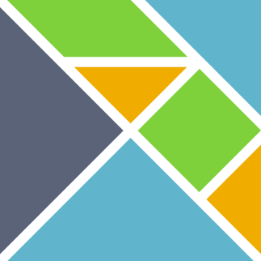

A Hands-On Introduction to Bidirectional Type Inference with Elm
Lucas Dutton, Chris Schankula, Christopher Anand



Intro
Lucas Dutton
PhD Student, Computer Science McMaster University
Interests: Functional programming, type theory
Motivation
- Most modern languages have types attached to values
- e.g.
Bool,Int,List Int - A typechecker takes type annotations in a program and checks that the types are sound
- Type inference takes it one step further: don't need type annotation to check types!
Example
Do the types in this program make sense?
isPos x = if x > 0 then True else 0
Example, cont'd:
The 2nd branch of this `if` does not match all the previous branches:
2| isPos x = if x > 0 then True else 0
^
The 2nd branch is a number of type:
number
But all the previous branches result in:
Bool
Note that we didn't supply any types to the compiler - type inference at work!
Why Bidirectional Type Inference?
- Our Elm example above only uses type inference
- Elm uses Hindley-Milner (HM) type inference:
- When a type is not completely known, it creates variables to represent unknown types
- Then it uses unification to solve a series of type equations after inferencing is done
- The HM algorithm is complicated, can lead to worse error messages
Why Bidirectional Type Inference, Part 2
- Bidirectional type inference: simple one-pass method implemented as two
mutually recursive functions,
checkandifer - A simpler structure means the user must provide more type annotations (e.g. top-level functions)
- Errors will be better localized
Roadmap
- Define a simple language (Syntax)
- Define types for our language
- Define typing judgments on our language
Environment
- Will use Elm to implement the language
- We are providing a fork link to an online Elm IDE on
stabl.rocks- A code skeleton of the implementation is given
- Follow along with the live demo and implement the type inference algorithm
- Parsing and testing also provided in the code
Syntax
- Simply typed lambda calculus (STLC):
- Variables
- Function declarations
- Function application
- With some extensions:
if-then-elseexpressions- Constants:
booleansandintegers - Binary operations
- Predicates
- Type annotations
Example code we could write
-- If-then-else
if 5 < -10 then 2 else 1 : IntegerTy
-- Boolean expressions
True && False : BooleanTy
-- Lambdas
\x -> if x < 2 then x + 1 else x + 2
-- Function application
(\x -> x) 2 : IntegerTy
But first, we need an Abstract Syntax Tree (AST) representation
Elm code
type Expr
= Var String
| FunDecl String {-input variable-} Expr {-body-}
| FunApp Expr {- e1 -} Expr {- e2 -}
| Ann Expr Ty
-- Not covered in presentation but is in the provided code
| Integer Int
| Boolean Bool
| BinOp Op Expr Expr
| PredOp PredOp Expr Expr
| If Expr {-condition-} Expr {-then-} Expr {-else-}
Types
type Ty
= IntegerTy
| BooleanTy
| FunTy Ty {- -> -} Ty
Examples
-- if 5 < -10 then 2 else 1 : IntegerTy
ifExpr = Ann (If (PredOp LT (Integer 5) (Integer (-10)))
(Integer 2)
(Integer 1)) IntegerTy
-- True && False : BooleanTy
boolExpr = Ann (PredOp And (Boolean True) (Boolean False)) BooleanTy
-- \x -> if x < 2 then x + 1 else x + 2
funExpr = FunDecl "x" <|
If (PredOp LT (Var "x") (Integer 2))
(BinOp Plus (Var "x") (Integer 1))
(BinOp Plus (Var "x") (Integer 2))
Other Elm Prerequisites
- We need to store the types of variables in a context \(\Gamma\) while running the algorithm
- We will use Elm's dictionary data structure provided in the standard library.
- Will use two operations:
Dict.getgets the value associated to a keyDict.insertinserts a key-value pair into a dictionary
- https://package.elm-lang.org/packages/elm/core/latest/Dict
Type Judgments
- The premise requires \(x : \tau\) to be in context \(\Gamma\)
- The conclusion says from \(\Gamma\) we deduce \(x : \tau\)
- \(\texttt{T-VAR}\) is the name of the judgment
import Dict exposing (Dict)
type alias Ctx = Dict String Ty
inferType : Ctx -> Expr -> Maybe Ty
inferType ctx expr =
case expr of
Var x -> Dict.get x ctx
More Rules: Function application
FunApp e1 e2 ->
case (inferType ctx e1, inferType ctx e2) of
(Just (FunTy t1 t2), Just t11) ->
if t1 == t11 then Just t2 else Nothing
_ -> Nothing
A problem with Function declarations
FunDecl x e ->
case inferType (ctx |> Dict.insert x ???) e of
Just ty2 -> Just (FunTy ??? ty2)
Nothing -> Nothing
- If this was Hindley-Milner we would use unification to provide a "guess" for ???
- Otherwise, need to "invent" a type for \(\tau_1\)…
Bidirectional Type Checking
Split the typing judgment into two:
- Inference mode \(\inp{\Gamma} \vdash \inp{t} \Rightarrow \outp{\tau}\)
- Checking mode \(\inp{\Gamma} \vdash \inp{t} \Leftarrow \inp{\tau}\)
\(\textcolor{blue}{\rule{2cm}{1cm}}\) is input
\(\textcolor{orange}{\rule{2cm}{1cm}}\) is output
Flexibility
For each type judgments we choose to run in either inference or checking mode
inferType : Ctx -> Expr -> Maybe Ty
inferType ctx expr =
case expr of
...
checkType : Ctx -> Expr -> Ty -> Maybe Ty
checkType ctx expr ty =
case expr of
...
Additional Rule #1: Check-Infer
- Anytime we can check, we can also infer!
- A "catch-all" case in the implementation
checkType ctx expr ty =
case expr of
...
_ -> case inferType ctx expr of
Just ty1 -> if ty == ty1
then Just ty
else Nothing
Nothing -> Nothing
Additional Rule #2: Annotations
Annotations can be inferred because we can use the annotation to check the type!
inferType ctx expr =
case expr of
Ann e ty -> checkType ctx e ty
Bidirectional Type Judgments
Variables
inferType ctx expr =
case expr of
Var x -> Dict.get x ctx
Function Application
inferType ctx expr =
case expr of
...
FunApp e1 e2 ->
case (inferType ctx e1) of
Just (FunTy t1 t2) ->
case (checkType ctx e2 t1) of
Just t1b -> Just t2
Nothing -> Nothing
_ -> Nothing
Function Declarations
checkType ctx expr ty =
case expr of
...
FunDecl x e ->
case ty of
FunTy t1 t2 ->
case checkType (ctx |> Dict.insert x t1) e t2 of
Just tt2 -> Just ty
_ -> Nothing
_ -> Nothing
When to infer? When to check?
BT-APP's conclusion only has \(\tau_2\). We can't "invent" a type for \(e_1\)!- Inferring \(e_1\) gives all required information, allowing us to synthesize \(\tau_2\) and check \(e_2\)
When to infer? When to check?
BT-ABSis run in check mode so we don't have to "guess" \(\tau_1\).- This relies on a top-level type annotation for top-level declarations
- Nested functions should have have their types already in the context!
General comments on check vs infer
- Rule of thumb: Can always check, can't always infer
- Check puts burden of annotation to the user
- Infer puts the burden on the algorithm
- Another explanation: Constructors are checked, "deconstructors" are inferred
- Function declarations "construct" a function, so we check it
- Function applications "deconstruct" functions by applying them, so we infer.
Conclusion
More Features
- Let-in expressions
- Recursion
- Tuples, Algebraic Data Types
- Polymorphism
- Other features?
Make it "Production Ready"
Maybetype doesn't give error messages when failure happens- Use
Result/Eitherto attach error messages
Other resources
Thank you!
The STaBL Foundation welcomes volunteers. We teach coding to grade-school kids.
This year we are expanding our program to various languages. We still need translations of other languages in our ShapeCreator app: